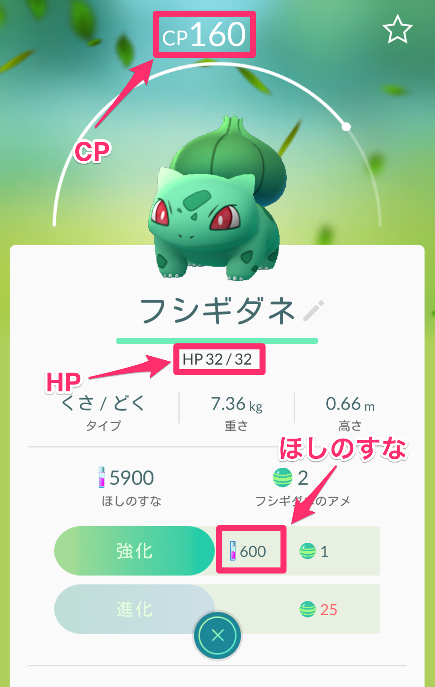
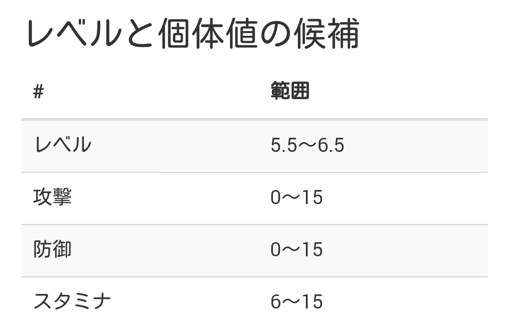
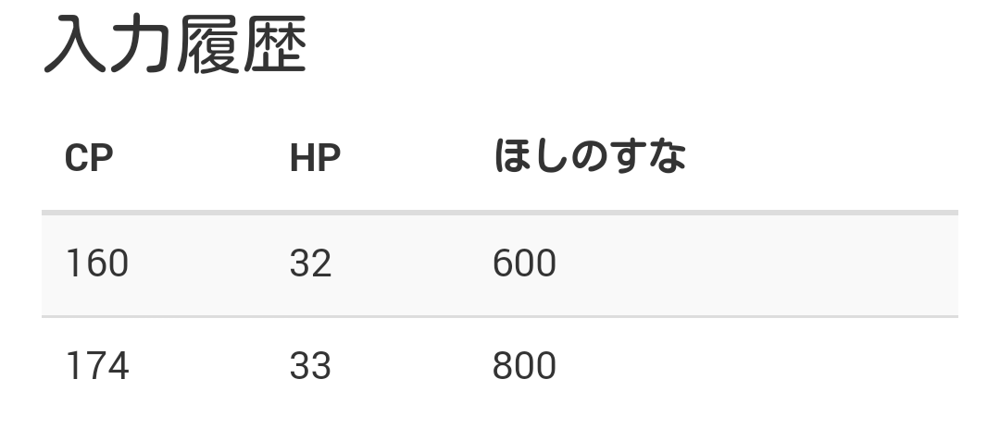
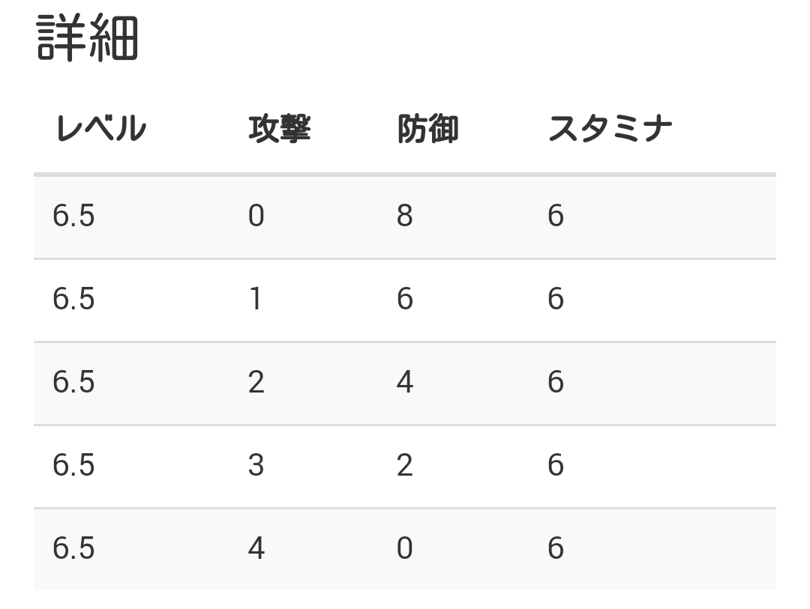

ポケモンGOのポケモンの個体値を計算するツールです。計算式や定数はExact CP Formula from Stats and CpM (and an update to the HP Formula)を参考に制作しました。
ポケモン名とCPとHPと星の砂を入力することで個体値を推定します。
例えば次のフシギダネの個体値を調べることを考えます。

各項目を次のように入力し計算ボタンをタップします。

結果は次のようになります。

このフシギダネはレベルは5.5〜6.5の範囲のどれかで、攻撃と防御とスタミナの個体値の範囲はそれぞれ、0〜15と0〜15と6〜12だとわかります。
低いレベルでは個体値の候補の範囲が広くなり正確な個体値が分からないという問題があります。
その場合にはポケモンを強化した後に絞り込み機能を使うと、候補の範囲を狭くすることが出来ます。
先ほどのフシギダネを強化すると、CPとHPと強化に必要なほしのすながそれぞれ、174と33と800になりました。
この数値を入力し、絞り込みボタンをタップします。

結果は次のようになります。

このフシギダネはレベル6.5で、攻撃と防御とスタミナの個体値の範囲はそれぞれ、0〜4と0〜8と6だとわかりました。先ほどの結果と比べると個体値の範囲が絞れていることがわかります。
入力履歴でどんな入力を行ったかを確認できます。

詳細で可能性のある個体値の組合せを確認できます。
